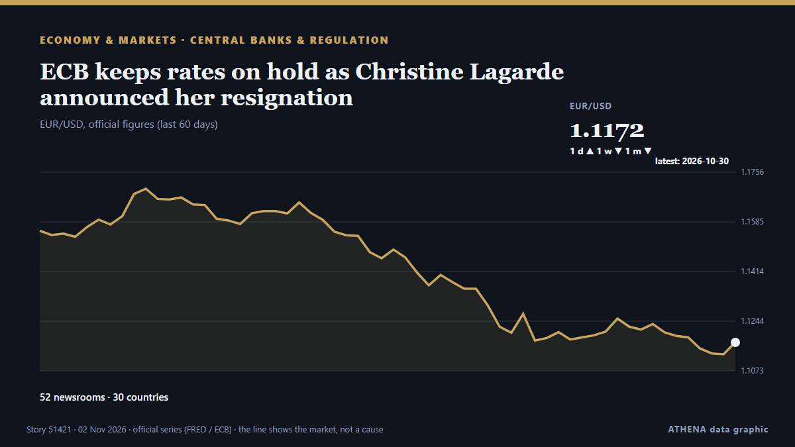

ECB keeps rates on hold as Christine Lagarde announced her resignation

The deposit rate will be left at 2.5% on Thursday, analysts say. από Luxembourg Times
Αναφέρθηκε ανεξάρτητα από 52 μέσα σε 30 χώρες από τις 29 Οκτ, πρώτο το Luxembourg Times· η κάλυψη εξασθενεί. Το ATHENA εκτιμά τον κίνδυνο μέτριο (2.4/10), κυρίως λόγω της σοβαρότητάς του και της εμβέλειάς του. Βεβαιότητα 86% (υψηλή): το επιβεβαιώνουν 52 ανεξάρτητα μέσα, μέση αξιοπιστία 75%. Μέσα ανά χώρα: Σιγκαπούρη (6), Ηνωμένο Βασίλειο (5), Νιγηρία (3). Κάλυψη: 29 Οκτ έως 29 Οκτ, 8 ώρες.
Γιατί έχει σημασία: Οι κεντρικές τράπεζες ορίζουν την τιμή του χρήματος· οι αποφάσεις τους για τα επιτόκια κινούν νομίσματα, ομόλογα, στεγαστικά δάνεια και χρηματιστήρια σε όλο τον κόσμο.
Τι άλλαξε: 2 νέες αναφορές από 2 μέσα στο 24ωρο έως 2 Νοε.
Πρώτη διατύπωση: European Central Bank (ECB) head Christine Lagarde to step down in February, before her term ends
Οι τίτλοι των ειδήσεων παρουσιάζονται στα αγγλικά, όπως δημοσιεύτηκαν.
Με μια ματιά
Επιλέγεται, βαθμολογείται και γράφεται από τη δημοσιευμένη μεθοδολογία του ATHENA. Κανένας συντάκτης δεν παρεμβαίνει σε μεμονωμένα γεγονότα. Πώς παράγεται ›
| 29 Oct 05:40 UTC | 35 |
|---|---|
| 29 Oct 11:40 UTC | 25 |
| 29 Oct 17:40 UTC | 6 |
| 29 Oct 23:40 UTC | 2 |
| 30 Oct 05:40 UTC | 1 |
| 30 Oct 11:40 UTC | 3 |
| 30 Oct 17:40 UTC | 0 |
| 30 Oct 23:40 UTC | 0 |
| 31 Oct 05:40 UTC | 0 |
| 31 Oct 11:40 UTC | 0 |
| 31 Oct 17:40 UTC | 0 |
| 31 Oct 23:40 UTC | 1 |
| 01 Nov 05:40 UTC | 1 |
| 01 Nov 11:40 UTC | 0 |
| 01 Nov 17:40 UTC | 0 |
| 01 Nov 23:40 UTC | 1 |
| 29 Oct 08:36 UTC | 1.3 |
|---|---|
| 29 Oct 11:06 UTC | 2.2 |
| 31 Oct 18:57 UTC | 1.8 |
| 02 Nov 03:40 UTC | 2.4 |
Γιατί αυτοί οι αριθμοί
Σημασία
Κίνδυνος
Βεβαιότητα
Η κάλυψη — ποιος το ανέφερε και πότε
ο τίτλος όπως δημοσιεύτηκε · ανοίγει το πρωτότυπο- Luxembourg Times · ΛουξεμβούργοECB set to hold rates to assess France and energy risks
- Business Recorder · ΠακιστάνEuropean shares inch up ahead of ECB as earnings remain in focus
- to vima · ΕλλάδαLagarde to Exit ECB as Europe Faces Economic Headwinds
- European Central Bank press · ΓερμανίαECB President Lagarde to step down on 7 February 2027
- CNBC Economy · Ηνωμένες ΠολιτείεςThe politics of President Lagarde's European Central Bank early exit — and who could replace her
- The Straits Times · ΣιγκαπούρηEuropean Central Bank president Christine Lagarde resigns after months of speculation
- Politico Europe · ΒέλγιοLagarde’s early exit Le Pen-proofs ECB as France veers toward a debt reckoning
- France 24 English · Γαλλία🔴 ECB President Christine Lagarde to step down in February 2027, months before term ends
- Vanguard · ΝιγηρίαECB President Christine Lagarde to step down in February 2027
- Luxembourg Times · ΛουξεμβούργοChristine Lagarde to step down as ECB president in February
- CNA (Channel NewsAsia) · ΣιγκαπούρηECB President Lagarde resigns after months of speculation
- The Independent · Ηνωμένο ΒασίλειοEuropean Central Bank President Christine Lagarde will resign Feb. 7, ahead of term
- DW English · ΓερμανίαEuropean Central Bank (ECB) head Christine Lagarde to step down in February, before her term ends
- RTÉ News · ΙρλανδίαLagarde announces resignation after months of speculation
- Xinhua (English) — page reader · ΚίναUrgent: Lagarde to step down as ECB president in February
- The Straits Times · ΣιγκαπούρηECB President Lagarde resigns at time of mounting challenges for Europe
- Euractiv · ΒέλγιοLagarde to step down as ECB president
- Stuff · Νέα ΖηλανδίαEuropean Central Bank President Christine Lagarde to resign nine months early
- The Korea Times · Νότια ΚορέαEuropean Central Bank President Christine Lagarde will resign Feb. 7, ahead of term
- Guardian Business · Ηνωμένο ΒασίλειοEurope’s central bank chief, Christine Lagarde, steps down for ‘freedom of speech’
- Cyprus Mail · ΚύπροςLagarde quits ECB nine months early as eurozone faces fresh interest rate pressure
- CNA (Channel NewsAsia) · ΣιγκαπούρηEuropean Central Bank President Christine Lagarde to step down months before term ends
- ProtoThema English ·Lagarde to step down as ECB president in February – Pierrakakis thanks her for contribution to eurozone stability
- Business Recorder · ΠακιστάνECB President Lagarde resigns at time of mounting challenges for Europe
- The Straits Times · ΣιγκαπούρηChristine Lagarde: The outsider who led the ECB her way
- Rappler · ΦιλιππίνεςECB President Lagarde resigns at time of mounting challenges for Europe
- TheJournal.ie · ΙρλανδίαChristine Lagarde to step down as president of European Central Bank
- Free Malaysia Today · ΜαλαισίαECB president Lagarde resigns at time of mounting challenges for Europe
- Central Banking · Ηνωμένο ΒασίλειοLagarde to step down from ECB
- APA (English) · ΑζερμπαϊτζάνChristine Lagarde to step down as ECB president in February
- The Economist - Finance & economics · Ηνωμένο ΒασίλειοChristine Lagarde departs at a moment of peril
- Sky News (World) · Ηνωμένο ΒασίλειοWill she stand? Lagarde quits European Central Bank ahead of French election
- The National · Ηνωμένα Αραβικά ΕμιράταECB President Christine Lagarde resigns after months of speculation
- Punch · ΝιγηρίαChristine Lagarde to step down as European central bank president
- Global News (World) · ΚαναδάςEuropean Central Bank chief resigns as economic volatility worsens
- Baltic News Network · ΛετονίαChanges at the European Central Bank – Lagarde announces early resignation
- Türkiye Today · ΤουρκίαECB chief Lagarde to step down early, triggering leadership race
- Channels TV · ΝιγηρίαECB President Christine Lagarde To Step Down In February 2027
- Xinhua (English) — page reader · ΚίναLagarde to step down early from ECB as search for successor begins
- The Business Times · ΣιγκαπούρηECB president Christine Lagarde resigns at time of mounting challenges for Europe